I led the research and design framing, interviewed stakeholders, and facilitated expert evaluations.
Poster Full Report
Brief
How could people in Ithaca share rides that fit their budgets and routines?
Read more: brief
HopIn is a design project that reimagines community ride-sharing in Ithaca. The platform promotes affordable, inclusive, and environmentally conscious transportation by connecting riders and drivers through proximity and trust. Our team aims to balance convenience with social good—building a system that supports accessibility and strengthens local community ties. This project was completed as part of Cornell’s INFO 4420 - HCI Studio.
Fieldwork
Stakeholder interviews, paper prototypes, and expert evaluations guided the concept.
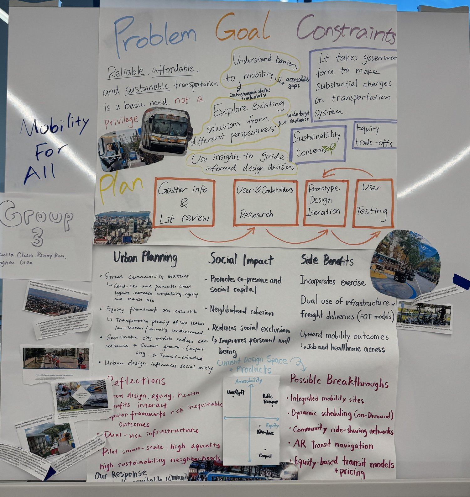
Read more: fieldwork
Design Landscape Definition
Idea Selection
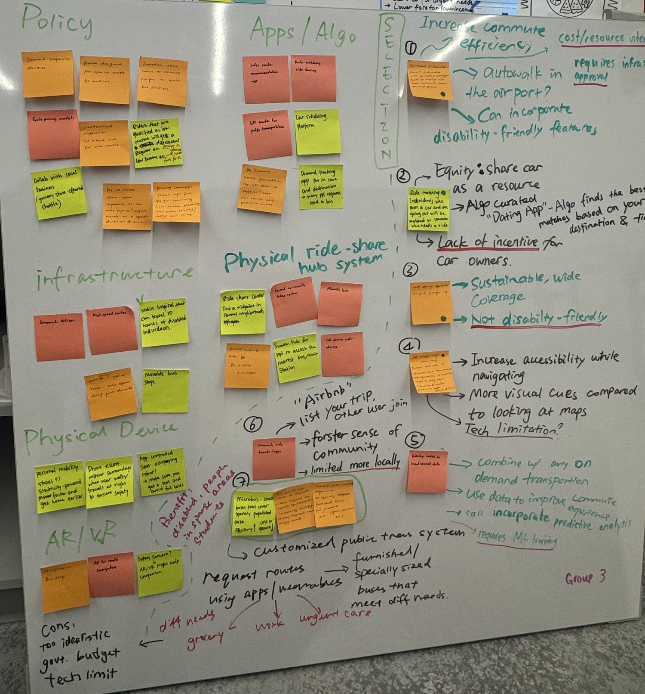
Preliminary Study on Stakeholders
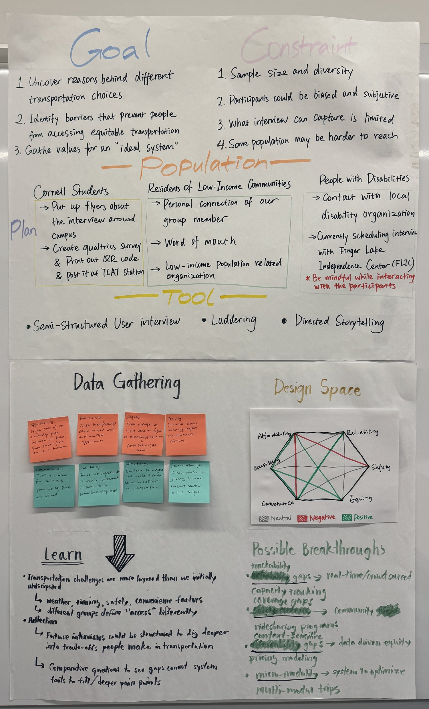
Paper Prototype and Expert Evaluation Protocol
Stakeholders Interview
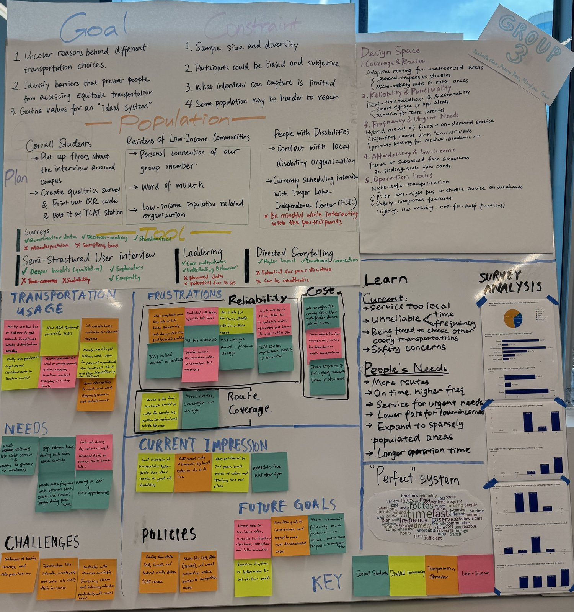
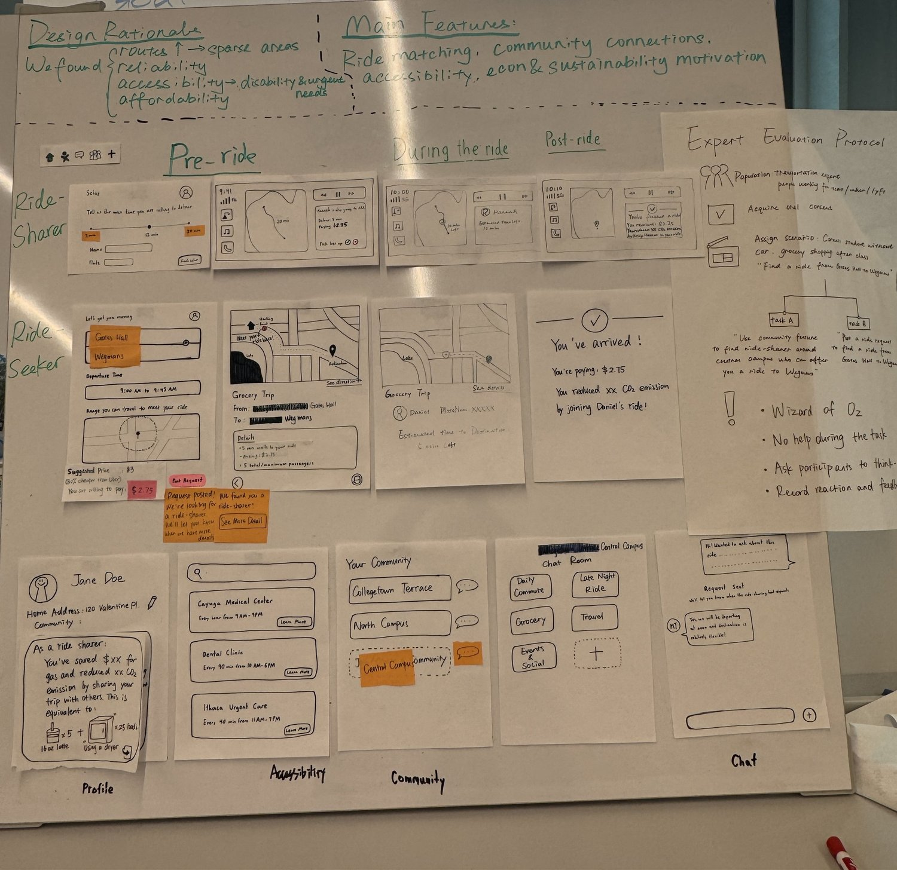
Solution
Riders can post a trip and find a nearby driver. The designs below show both sides of the exchange.
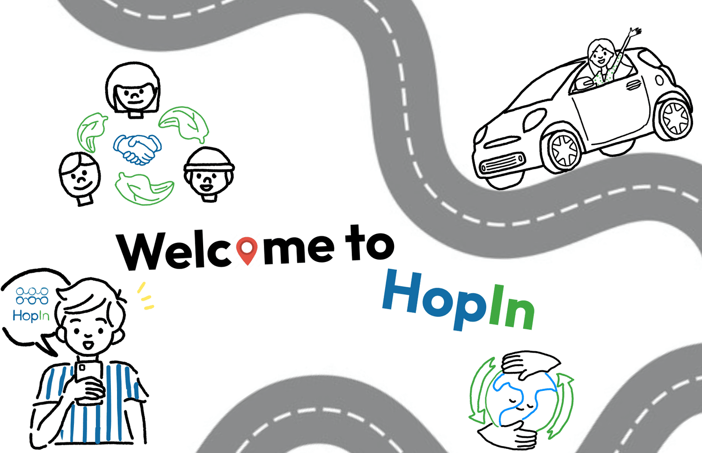
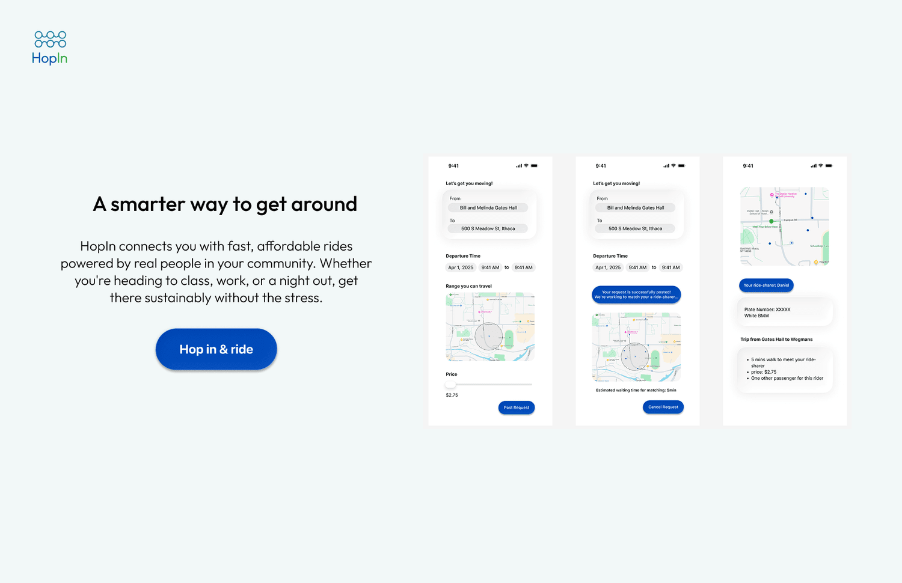
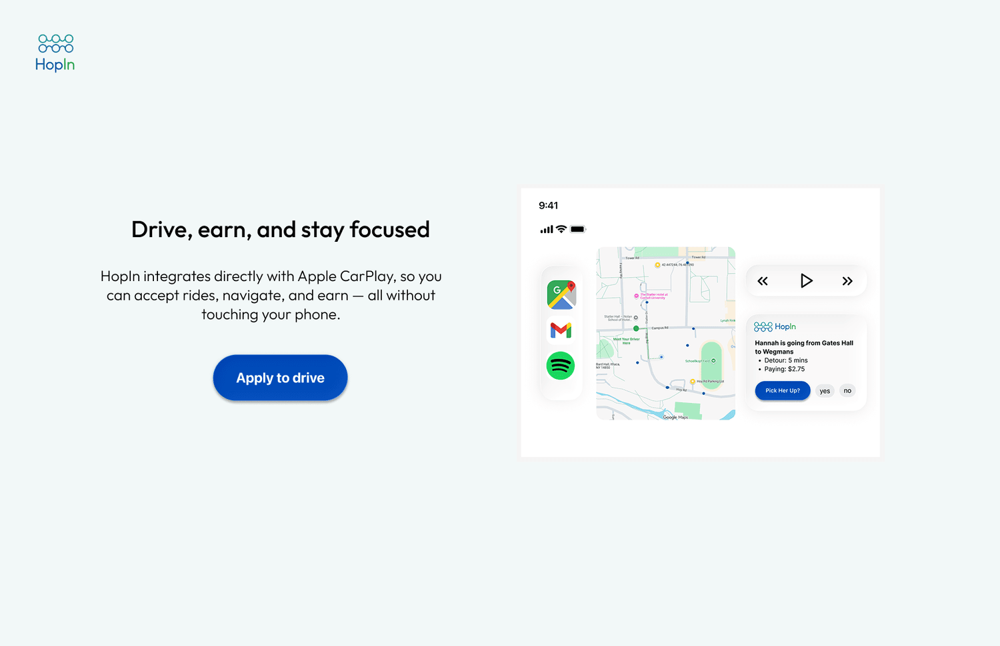
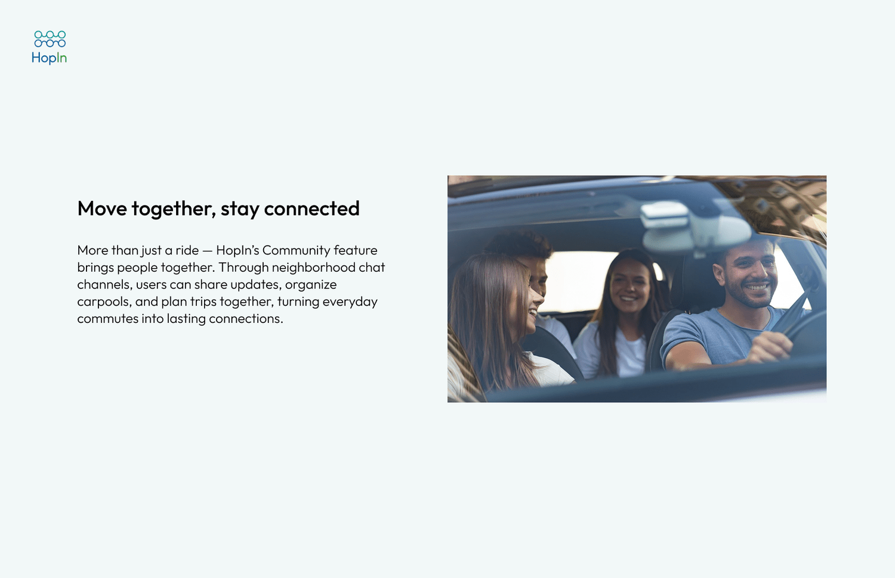
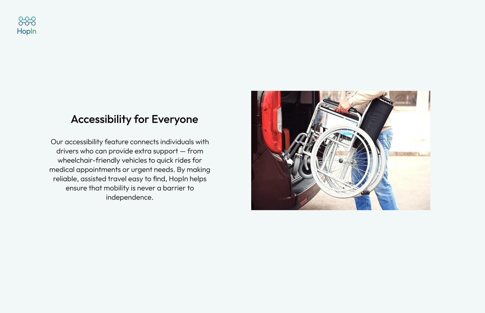
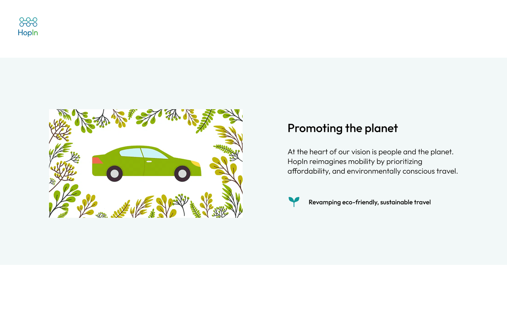
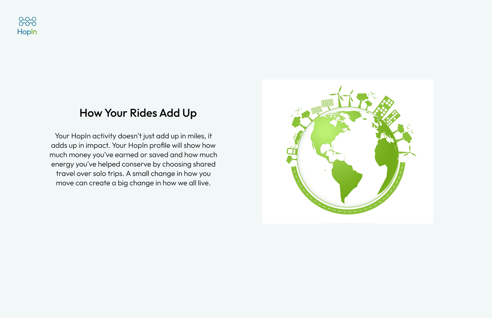
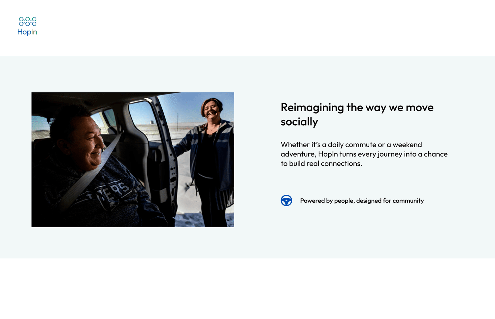
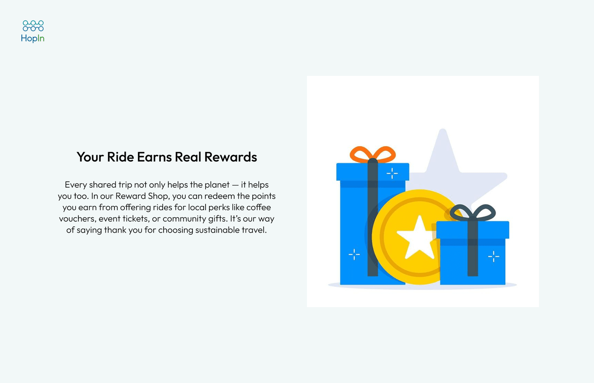